Com transforma Linux una petició d’usuari en una operació segura?
pt_regs).copy_from_user.-errno al kernel, -1 + errno a la libc.Com transforma Linux una petició d’un programa d’usuari en una operació segura del kernel?
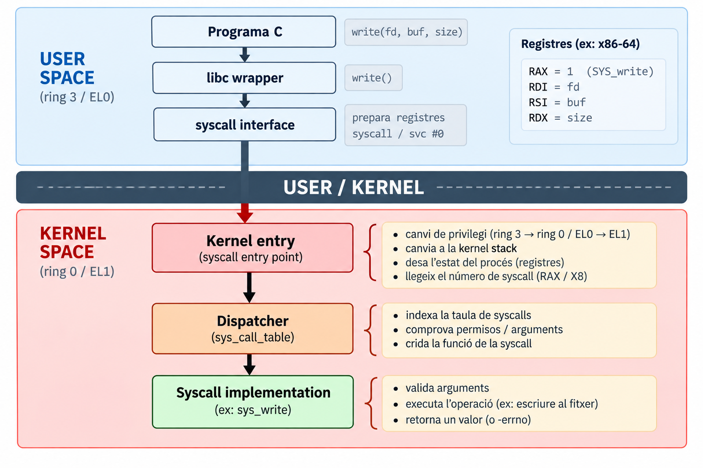
syscall / svc fa el mínim: privilegi + salt a l’entrada fixa.Una syscall no és simplement canviar de stack: l’entrada al kernel prepara l’execució sobre la kernel stack i deixa desat tot el que cal per tornar.
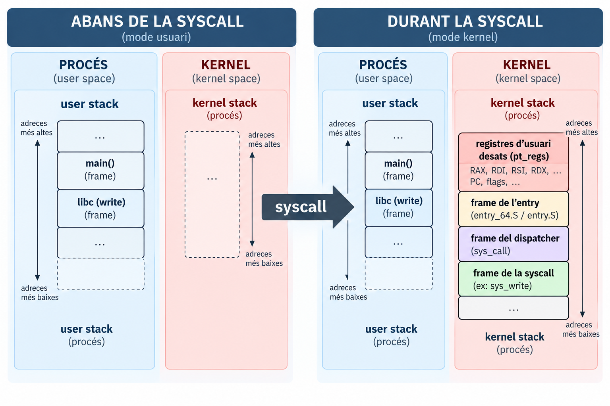
SP d’usuari (podria apuntar a qualsevol lloc): usa la seva pila, una per fil/tasca.syscall no canvia RSP; el codi d’entrada ho fa a mà.SP_EL0 / SP_EL1).struct pt_regs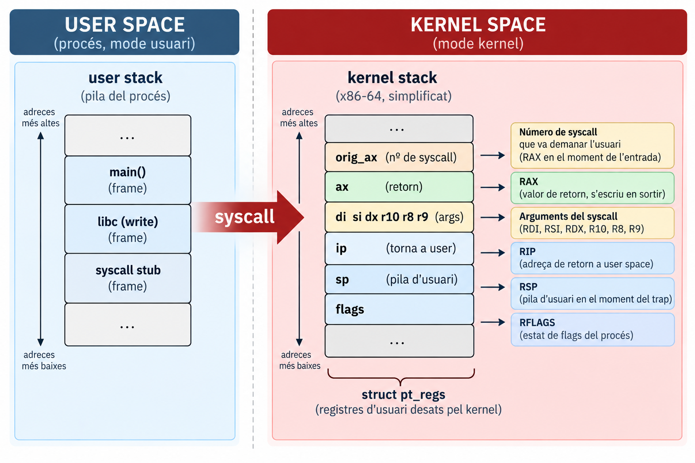
struct pt_regs, a la kernel stack.orig_ax i els arguments dels camps del pt_regs.regs->ax; en tornar, es restaura tot.pt_regs.pt_regsPer què rax = -38 i orig_rax = 1 a l’entrada de la syscall?
Perquè el kernel deixa -ENOSYS (38) per defecte a ax i conserva el número original a orig_ax; el resultat de la syscall el sobreescriurà. És exactament el regs->orig_ax / regs->ax que veurem al dispatcher.
Aquesta dema s’atura just a l’entrada de la syscall, i el pt_regs que veu el kernel es veu des de fora: orig_rax = 1 és el número que va posar el programa, i rax = -38 (-ENOSYS) és el valor per defecte que el kernel deixa a ax fins que la syscall hi escrigui el resultat. Un continue més enllà, ja surt Hello i rax = 6, els bytes escrits.
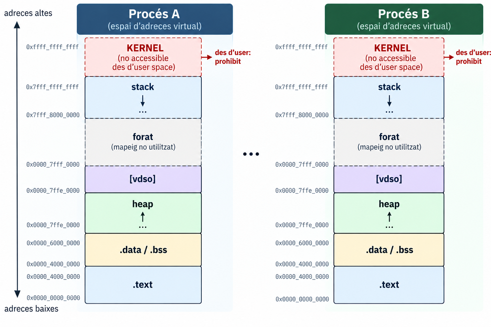
Es llancen dues còpies d’un programa que desa el seu PID a una variable global. Totes dues imprimeixen el mateix &x=0x40402c però valors diferents, perquè cada procés té el seu espai d’adreces virtual. A /proc/PID/maps es veuen [heap], [stack] i [vdso], i cap tram del kernel: hi és present, però inaccessible des d’user space.
Esdeveniment síncron generat per la CPU quan una instrucció no es pot completar (o cal avisar el kernel). El control passa al kernel, que decideix què fer.
| Tipus | Quan s’informa | Exemple |
|---|---|---|
| Fault | abans de completar la instrucció (es pot reintentar) | page fault |
| Trap | després d’executar la instrucció | breakpoint |
| Abort | irrecuperable | double fault |
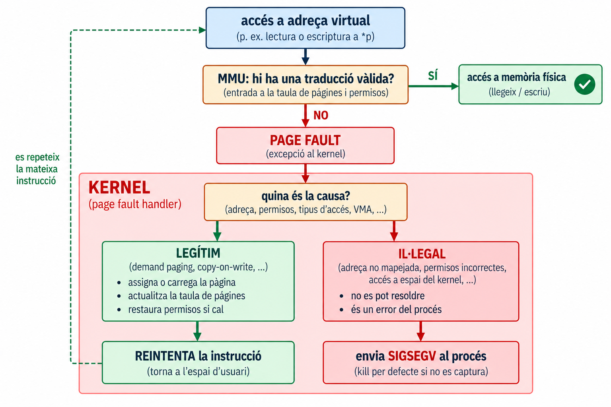
Un page fault no és necessàriament un error: és un mecanisme normal. El que decideix si és un error és el kernel, segons l’espai d’adreces del procés.
Un malloc de 256 MiB gairebé no dispara cap page fault, perquè només reserva memòria virtual. En tocar un byte de cada pàgina de 4 KiB, el recompte de getrusage puja en 65.535, un per pàgina. Un page fault no és un error sinó el mecanisme normal (demand paging): el kernel assigna la pàgina i reintenta la instrucció.
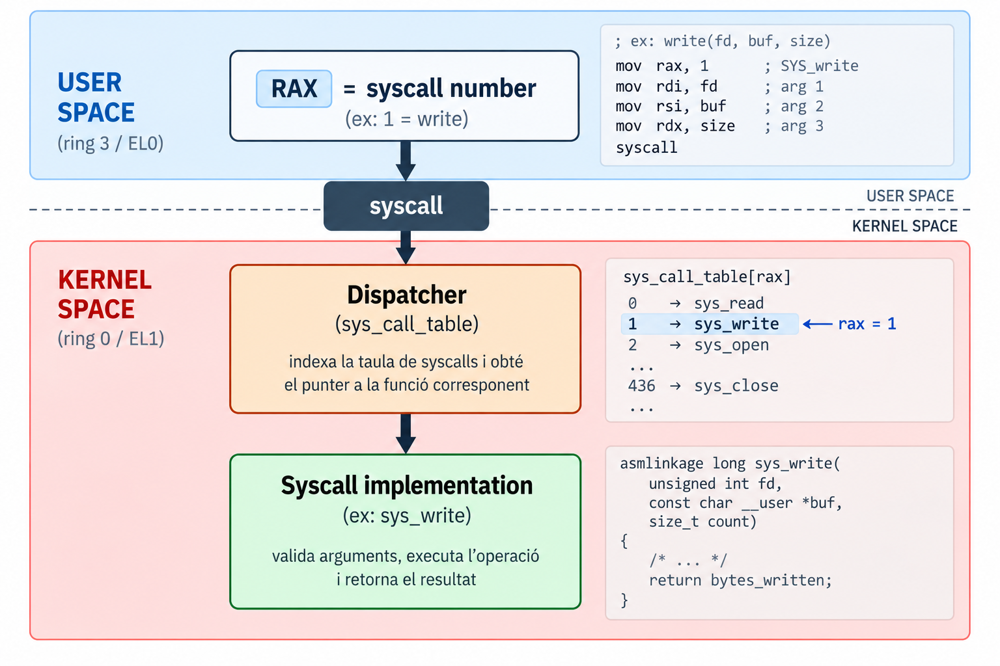
Quina funció del kernel s’executa? I si el número no existeix?
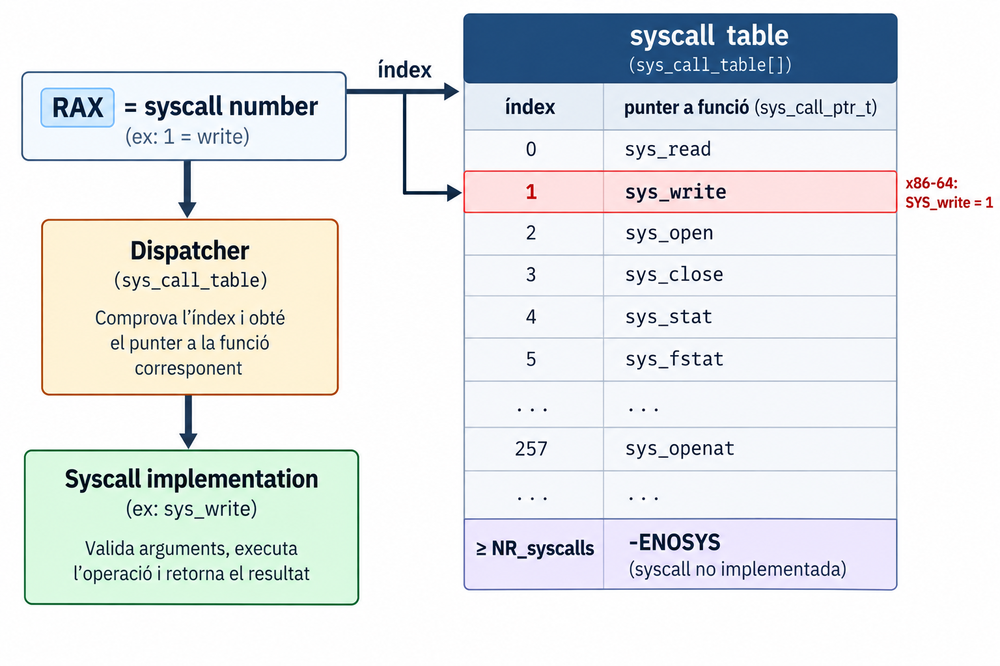
La idea número → funció del kernel és sempre la mateixa. La implementació concreta depèn de l’arquitectura i de la versió del kernel (taula, switch…).
read = 63, write = 64, openat = 56).-ENOSYS.sys_write()sys_read, sys_write, sys_openat…__user marca el punter com a adreça d’user space (no fiable).pt_regs).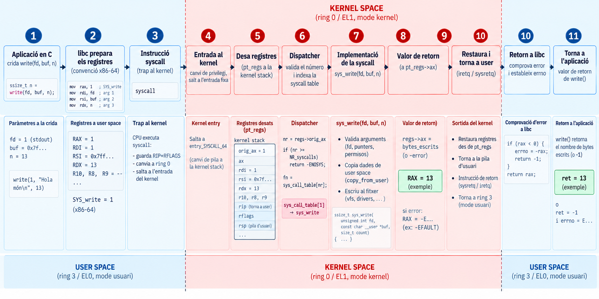
buffer des del punt de vista del kernel?buffer és una adreça de user space.sys_write() s’executa en kernel space, amb privilegis.Pot el kernel confiar en qualsevol punter que li dona el programa?
No. Tot el que ve de user space s’ha de considerar incorrecte o maliciós fins que es demostri el contrari.
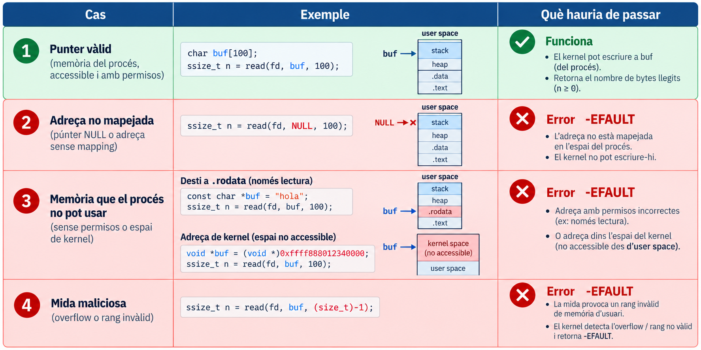
Es valida el rang [ptr, ptr + size) i els permisos, no només ptr. Amb la mateixa lògica: fd, flags, mides…
Si el kernel tractés un valor controlat per l’usuari com una adreça de memòria privilegiada, sense validar-lo, podria exposar o corrompre dades del kernel.
Exposició (model): el kernel llegeix d’una adreça que no és de l’usuari i ho envia cap a fora (p. ex. a un fitxer).
Corrupció (model): el kernel escriu en una adreça que no és de l’usuari amb dades que l’usuari controla.
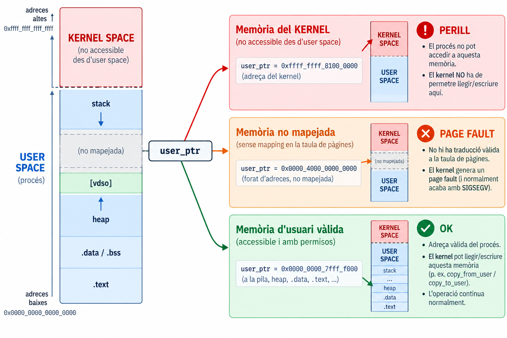
El problema no és només un segfault: el kernel actua amb els seus privilegis en nom d’un programa que no en té.
copy_from_user() / copy_to_user()\[ \text{USER BUFFER} \xrightarrow{\text{copy\_from\_user}} \text{KERNEL BUFFER} \]
\[ \text{USER BUFFER} \xleftarrow{\text{copy\_to\_user}} \text{KERNEL BUFFER} \]
get_user(), put_user().Un write amb l’adreça 0x1 i un altre amb una adreça del kernel retornen -1 EFAULT i el programa continua, perquè el kernel valida els punters amb copy_from_user. Un accés directe *p = 'x' amb aquella mateixa adreça acaba en SIGSEGV i el procés mor (exit 139).
Tot el que arriba de user space és potencialment incorrecte:
fd tancat, inexistent, d’un altre tipus),El kernel valida-ho-tot a l’entrada i retorna un error concret (-EFAULT, -EBADF, -EINVAL, -ENOSYS…) en lloc de suposar.
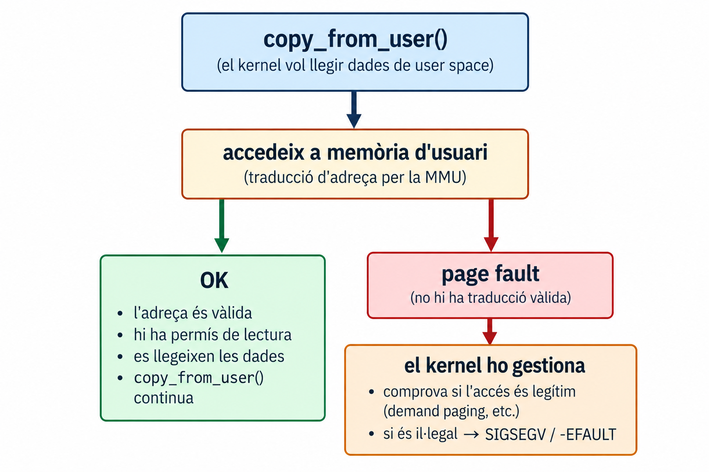
Dins del kernel, un page fault pot ser: (1) un fault legítim (demand paging), (2) un punter invàlid d’usuari, (3) un bug del kernel. Com sap el kernel què és?
Llista de les instruccions concretes del kernel que poden accedir a memòria d’usuari (les de copy_from_user, get_user…), amb l’adreça on recuperar-se si fallen.
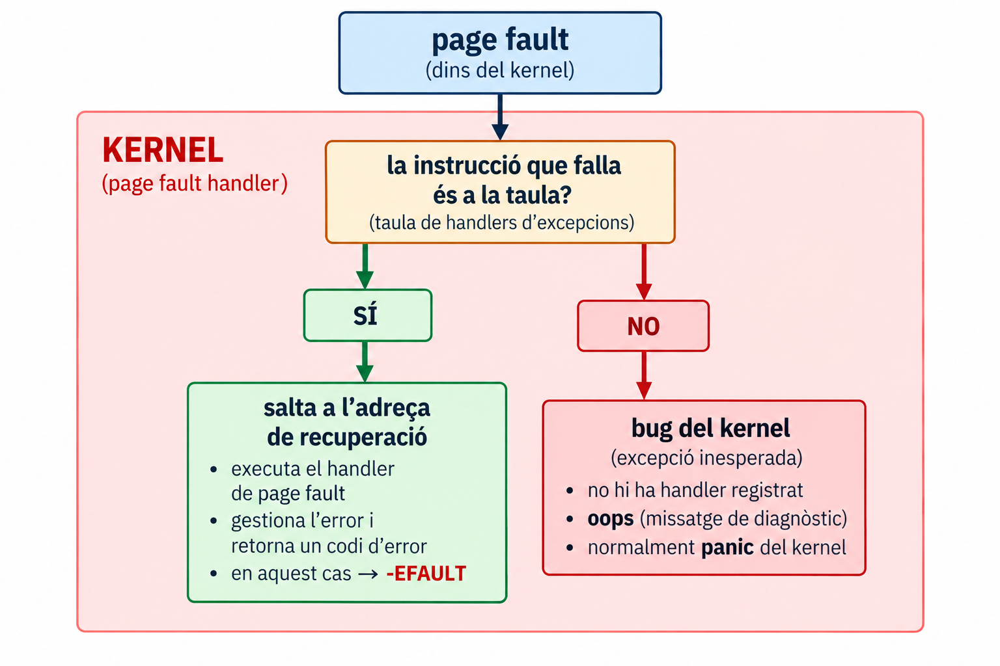
Resultat: un accés invàlid a memòria d’usuari es converteix en un -EFAULT i no en un crash del kernel.
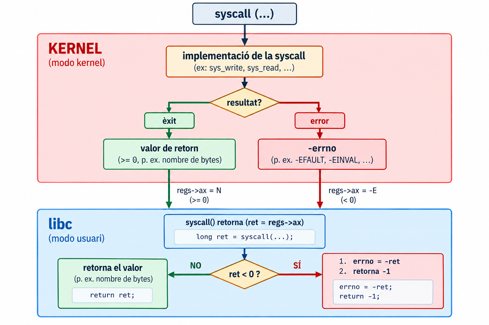
-1 i errno amb el motiu.El kernel retorna un valor negatiu (-errno, dins del rang -4095..-1) al registre de retorn. El wrapper de libc el converteix: errno = -ret; return -1;.
errno no és una variable que el kernel retorni: és una variable de la libc (per fil) que omple el wrapper.
open() que fallastrace -e trace=openat mostra que open() acaba com a openat(...) = -1 ENOENT: el kernel retorna el codi d’error, i la libc el converteix en -1 més errno, que perror mostra com a No such file or directory. Abans d’aquesta línia surten també els openat del loader (ld.so.cache, libc.so.6), que mostren que el programa ja ha fet syscalls abans del nostre main.
pt_regs) i treballa sobre la kernel stack.copy_from_user / copy_to_user.-errno; la libc l’exposa com -1 + errno.\[ \text{Usuari} \xrightarrow{\text{syscall}} \text{entrada al kernel} \xrightarrow{\text{dispatcher}} \text{sys\_xxx} \xrightarrow{\text{retorn}} \text{Usuari} \]
/* Linux 6.1, simplificat (arch/x86/entry/common.c) */
static bool do_syscall_x64(struct pt_regs *regs, int nr)
{
unsigned int unr = nr; /* negatius → molt grans */
if (likely(unr < NR_syscalls)) {
unr = array_index_nospec(unr, NR_syscalls);
regs->ax = sys_call_table[unr](regs); /* retorn → RAX */
return true;
}
return false; /* → -ENOSYS */
}unr < NR_syscalls: valida el número que ve de user space.array_index_nospec: evita accessos especulatius fora de la taula (Spectre v1).regs->ax: serà el RAX que veurà l’usuari en tornar.get_user i la taula d’excepcions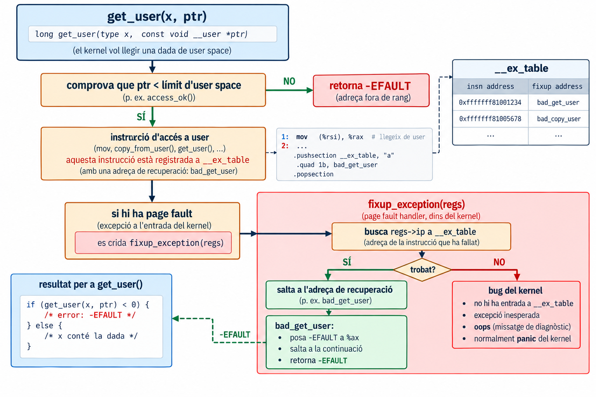
| Cost | Comprovar punter | Fault handling |
|---|---|---|
| Adreça vàlida | cerca a l’espai d’adreces | negligible |
| Adreça invàlida | cerca a l’espai d’adreces | cerca a la taula d’excepcions |
Linux tria la 2a (amb la taula d’excepcions)
[vdso] a /proc/PID/maps).gettimeofday, time, clock_gettime…): no cal canviar de mode.int 0x80, sysenter o syscall; ho decideix el kernel.